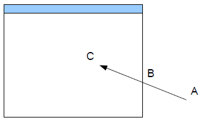
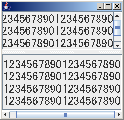
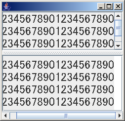
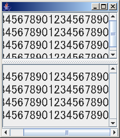
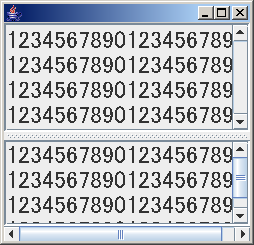
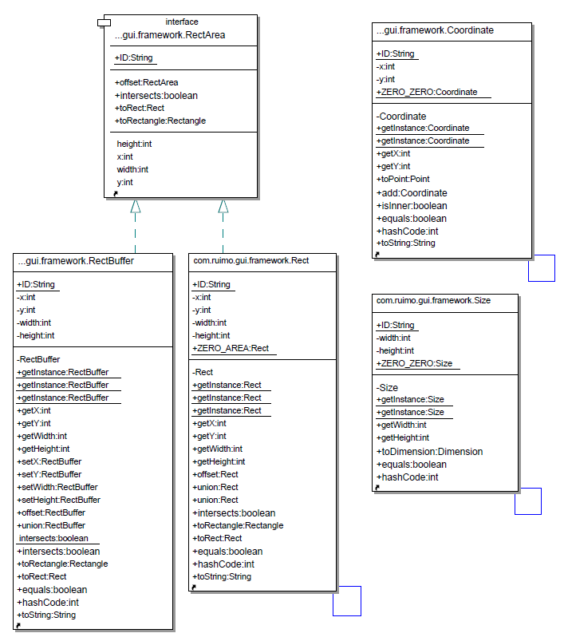
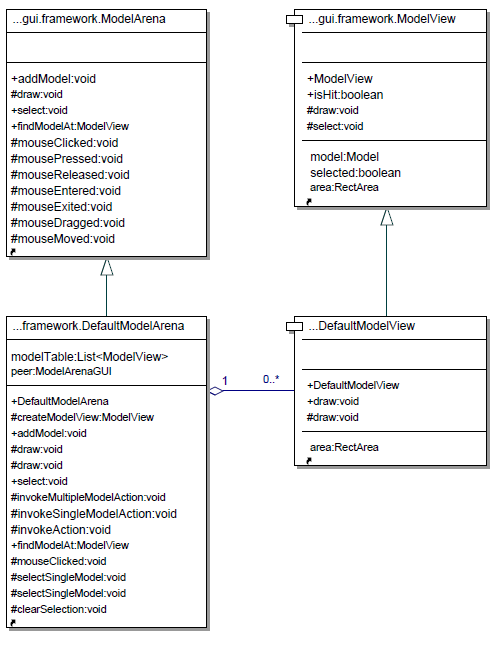

mousePressed(A)
mousePressed(A)mouseDragged(A)
mouseDragged(AからBの間)
mouseDragged(B)
mouseReleased(B)
Javaに関する気付いたことを書きためていきます。
cssのcounter機能を使用しているため、非対応ブラウザだと章番号が正しく表示されないかもしれません。
色々なマウス操作をしてみてマウスイベントの発生のしかたを調査してみる。API仕様書で厳密に定義されているわけではないので、プラットフォームによるかもしれない。

mouseEntered(B)
mouseMoved(B)
mouseMoved(BからCの間)
mouseMoved(C)
mousePressed(C)
mouseReleased(C)
mouseClicked(C)
mousePressed(A)
mouseDragged(A)
mouseDragged(AからBの間)
mouseDragged(B)
mouseReleased(B)
 mousePressed(A)
mousePressed(A)
mouseDragged(A)
mouseDragged(AからBの間)
mouseDragged(B)
mouseExited(B)
mouseDragged(BからCの間)
mouseReleased(C)
InputEventには次のような定数定義がある。ALT_DOWN_MASK, ALT_GRAPH_DOWN_MASK, CTRL_DOWN_MASK, META_DOWN_MASK, SHIFT_DOWN_MASK。キーボードを押しながらクリックした時にどれが発生するのか。環境はWindows2000 J2SE5.0_04。MouseEvent.getModifierEx()を使用して調査。
public void mouseClicked(MouseEvent e){
StringBuffer modifier = new StringBuffer();
if ((e.getModifiersEx() & InputEvent.ALT_DOWN_MASK) != 0) {
modifier.append("ALT, ");
}
if ((e.getModifiersEx() & InputEvent.ALT_GRAPH_DOWN_MASK) != 0) {
modifier.append("ALT_GRAPH, ");
}
if ((e.getModifiersEx() & InputEvent.CTRL_DOWN_MASK) != 0) {
modifier.append("CTRL, ");
}
if ((e.getModifiersEx() & InputEvent.META_DOWN_MASK) != 0) {
modifier.append("META, ");
}
if ((e.getModifiersEx() & InputEvent.SHIFT_DOWN_MASK) != 0) {
modifier.append("SHIFT, ");
}
if (modifier.length() >= 2)
modifier.setLength(modifier.length() - 2);
System.err.println("Mouse clicked (" + e.getX() + ", " + e.getY() + ") " +
e.getModifiersEx() + "(" + modifier + ")");
}
| キー | 発生イベント |
|---|---|
| 右、左Ctrl | CTRL_DOWN_MASK |
| 右、左Alt | ALT_DOWN_MASK |
| 右、左Shift | SHIFT_DOWN_MASK |
もちろん上記3つの任意のコンビネーション(同時押し)も検知される。上記以外のキー(ESC, 全角, CAPS, 無変換, 変換, かな)は影響を与えないようだ。
マウス右ボタンでMETA、マウス中央ボタンでALTが発生するようだ。これはキーボードと同時押しするとキーボードが優先される(例：SHIFT押しながら右クリックするとSHIFTのみが発生し、METAは付かない)。なんか不可思議な動きだ。中央ボタンはALTを押していようがいまいがALT付きで返ってくる。
ドラッグイベントはXXX_DOWN_MASKでは一切発生しない。かわりにMouseEvent.isShiftDown/isControlDown/isAltDownを使用する。イベントマスクを使用したいなら、SHIFT_MASK/CTRL_MASK/ALT_MASKを使う。非推奨になってるけど。これもなんか統一がとれていなくて妙な感じだ。
 こんなUIを作りたい。JSplitPaneで複数に区切られた領域がJScrollPaneで提供されていて、水平方向のスクロールバーは1つにまとめたい。普通に作ると両方のJScrollPaneに別個の水平スクロールバーが表示されてしまう。
こんなUIを作りたい。JSplitPaneで複数に区切られた領域がJScrollPaneで提供されていて、水平方向のスクロールバーは1つにまとめたい。普通に作ると両方のJScrollPaneに別個の水平スクロールバーが表示されてしまう。
コード例(ダウンロード(含ソース), 実行)
JScrollBar hscr1 = jScrollPane1.getHorizontalScrollBar();
hscr1.setVisible(true);
hscr1.addAdjustmentListener(new AdjustmentListener() {
public void adjustmentValueChanged(AdjustmentEvent e) {
jScrollPane2.getHorizontalScrollBar().setValue(e.getValue());
}
});
getContentPane().add(hscr1, java.awt.BorderLayout.SOUTH);
 この方法だと水平スクロールバーが必ず出た状態になる。この方法の解決方法は次に述べる。
この方法だと水平スクロールバーが必ず出た状態になる。この方法の解決方法は次に述べる。
 スクロールバーの最大値-最小値が、見えている領域サイズと等しいかどうかで、表示するかどうかを決定して、その都度visibleを制御。
スクロールバーの最大値-最小値が、見えている領域サイズと等しいかどうかで、表示するかどうかを決定して、その都度visibleを制御。
コード例(ダウンロード(含ソース), 実行)
hscr1.addAdjustmentListener(new AdjustmentListener() {
public void adjustmentValueChanged(AdjustmentEvent e) {
jScrollPane2.getHorizontalScrollBar().setValue(e.getValue());
JScrollBar sb = (JScrollBar)e.getSource();
boolean needToShow = (sb.getMaximum() - sb.getMinimum() != sb.getVisibleAmount());
if (needToShow != sb.isVisible()) {
sb.setVisible(needToShow);
sb.getParent().validate();
}
}
});
片方の領域に垂直スクロールバーがあって、もう片方には無い時、右端までスクロールすると、位置がずれてしまう(上下で桁位置が揃っていないことに注意)。これまで見てきた通り、水平スクロールは上の領域の所有だ。この表示例だと"2"が先頭になる位置に設定されている。その設定は下の領域にも適用されるが、そうすると右側に余白ができてしまうので、JScrollPaneがそのような表示を許さないようだ。

レタッチして無理やり書くと、こんな感じか。JScrollPaneを継承、改造してこれを許すように頑張るという手もあるが、こんな表示をするために頑張ることに意味を見いだせなかった。

安直な解決策1は垂直スクロールバーのpolicyをALWAYSにして常に表示させる方法。
あとは1つでも垂直スクロールバーが必要な領域が発生したら、全てに垂直スクロールバーを表示するというのもありかな。後者は、垂直スクロールバーを監視して実行時にpolicyを切り替えればできるはず。
SwingではJComponent.setAutoscrolls()というメソッドがあって、これをtrueに設定してやると、コンポーネントから、そのコンポーネント外にマウスがドラッグされた時に合成イベントを生成してくれる(詳細は、JComponent.setAutoScrolls()のJavaDocを参照)。早速これを利用してみる。
コード例(ダウンロード(含ソース), 実行)
MouseMotionListener l = new MouseMotionAdapter() {
public void mouseDragged(MouseEvent e) {
Rectangle r = new Rectangle(e.getX(), e.getY(), 1, 1);
((JLabel)e.getSource()).scrollRectToVisible(r);
}
};
jLabel1.addMouseMotionListener(l);
jLabel2.addMouseMotionListener(l);
 これによって、確かに上の領域に対してはオートスクロールがうまく動作する。領域内でマウスのボタンを押下して、そのまま領域外にドラッグすると、その方向にオートスクロールする。横にオートスクロールすれば、下の領域も一緒に追っかけてスクロールする。
しかし、下の領域のオートスクロールに対しては上は付いて込ない。これは考えてみれば当り前だ。上の領域の水平スクロールバーは監視されており、変化があれば下のスクロールバーに伝搬される。これに対し、下のスクロールバーの変化を上に伝える仕組みは無い。なので、単純に同様のコードを追加してみる。
コード例(ダウンロード(含ソース), 実行)
JScrollBar hscr2 = jScrollPane2.getHorizontalScrollBar();
hscr2.addAdjustmentListener(new AdjustmentListener() {
public void adjustmentValueChanged(AdjustmentEvent e) {
jScrollPane1.getHorizontalScrollBar().setValue(e.getValue());
}
});
一見、上のスクロールバーの変化が下のスクロールバーに伝えられ、それがまた上に伝えられ、と無限に続きそうだが、問題なく動作するようだ。恐らく値が同じ場合にはリスナが呼ばれないのだろう。
良くあるドロー系アプリケーションのようなマウスイベント処理を考えてみる。
 自由配置されたオブジェクトが複数存在。
自由配置されたオブジェクトが複数存在。
オブジェクト上で左クリックした場合は、そのオブジェクトを選択状態とし、それ以外のオブジェクトを非選択状態とする。
オブジェクト上でSHIFTキーを押しながら左クリックした場合は、そのオブジェクトの選択状態を反転する(選択状態なら非選択状態に、非選択状態なら選択状態に変更)。すでに選択状態となっている他のオブジェクトの状態は変更しない。
オブジェクト以外の場所で左クリックした場合は、全てのオブジェクトの選択状態を解除する。
オブジェクト以外の場所でSHIFTキーを押しながら左クリックした場合は、何もしない。
オブジェクト上で右クリックした場合は、そのオブジェクトが選択状態の場合には、オブジェクト用の機能呼び出し(例：ポップアップメニュー表示)を全ての選択状態のオブジェクトに対して行う。右クリックしたオブジェクトが選択状態でなかった場合には、選択状態とし、他のオブジェクトの選択状態を解除し、右クリックされたオブジェクトに対してのみオブジェクト用の機能呼び出しを行う。
オブジェクト以外の場所で右クリックした場合は、全てのオブジェクトの選択状態を解除し、デフォルトの機能呼び出しを行う。
オブジェクトの上でドラッグを開始した場合、選択状態のオブジェクト全てを移動する。
オブジェクト以外の場所でドラッグを開始した場合、全てのオブジェクトの選択状態を解除し、枠線を描画する。ドラッグ終了時点で枠線内に領域が(一部でも)重なったオブジェクトを全て選択状態とする。
オブジェクト以外の場所でSHIFTキーを押しながらドラッグを開始した場合、枠線を描画する。ドラッグ終了時点で枠線内に領域が(一部でも)重なったオブジェクトを追加で選択状態とする。
枠線描画時に領域から外にマウスカーソルがはみ出した場合は、はみ出した方向とはみ出し量が通知される。
描画域はJComponent。
オブジェクト1つ1つにはSwingのコンポーネントは割り当てない(リソースの制約)。
想定オブジェクト最大数=10万。
想定する利用者：
下の方がよりスキルレベルは低くなる傾向があると思われる(実際どうかは別として)。なので下の利用者にとって、より分かり易くなければならない。フレームワークの都合で、Userが使用するクラスに不要なメンバが見えるのはよろしくない(「API仕様書に、このメソッドはフレームワークで使用するのでユーザは使用しないでください」みたいな)。フレームワーク内部処理用のメンバはpublicにしない。
 とりあえず、RectangleとかPointとかのイミュータブル版を作っておくことにする。
Rectはjava.awt.Rectangleのイミュータブル版。
RectBufferはミュータブル版。Stringに対するStringBuffer的存在。
RectAreaは共通インターフェース。Stringに対するCharSequence的存在。
Coordinateはjava.awt.Pointのイミュータブル版
Sizeはjava.awt.Dimensionのイミュータブル版

Modelは、このフレームワークで描画するオブジェクト。描画に関する知識は全く持たない。
ModelViewは、オブジェクトの描画を行う。どうしてもprotectedインターフェースとpublicインターフェースを別々に提供したかったので、interfaceではなくabstract classになっている。
描画面を抽象化したもの。ModelViewを配置して表示する。描画面に対するModelの操作は、Swingに直接関係するもの以外は、このクラスを通して行なう。どうしてもprotectedインターフェースとpublicインターフェースを別々に提供したかったので、interfaceではなく空のabstract classになっている。
描画面のSwing実装。マウス関係のイベント処理の委譲、またawtからの描画要求をModelArenaに委譲する。基本的に丸投げするだけなのでSwing用アダプタといったところか。
描画が必要になると、awtのイベントディパッチスレッドは、paintComponent()を呼び出す。
@Override protected void paintComponent(final Graphics g) {
super.paintComponent(g);
Rectangle clip = g.getClipBounds();
g.setColor(getBackground());
g.fillRect(clip.x, clip.y, clip.width, clip.height);
g.setColor(getForeground());
model.draw(Rect.getInstance(clip), g);
}
JModelArenaComponent.paintComponent()は更新が必要な部分を背景色に塗りつぶした後、描画処理をModelArenaに委譲する。
ModelArenaとModelViewのデフォルト実装としてDefaultModelArenaとDefaultModelViewが提供される。
 JModelArenaComponentのpaintComponent()からDefaultModelArenaのdraw()が呼び出されると、
@Override protected void draw(RectArea area, Graphics g) {
for (ModelView mv:modelTable) {
draw(mv, area, g);
}
}
protected void draw(ModelView mv, RectArea area, Graphics g) {
mv.draw(area, g);
}
全てのModelViewに対してdraw()が呼び出される。DefaultModelViewのdraw()は、
public void draw(RectArea area, Graphics g) {
if (getArea().intersects(area)) {
draw(g);
}
}
指定された描画領域に自分が入っているかをチェックして、入っていれば自分自身の描画を実行する。これによって描画面に各コンポーネントが描画される。
イベント処理はModelArenaで行われるので、ModelArenaでMouseListenerやMouseMotionListenerを実装してしまえば簡単だが、そうするとModelArenaのpublicインターフェースにmouseXXX()メソッドが露出されることになるのでUserにはノイズになる。そこでJModelArenaComponent側でアダプタを用意してModelArena側に委譲する。
public JModelArenaComponent() {
addMouseListener(new MouseListener() {
public void mouseClicked(MouseEvent e) {
getModel().mouseClicked(e);
}
public void mousePressed(MouseEvent e) {
getModel().mousePressed(e);
}
public void mouseReleased(MouseEvent e) {
getModel().mouseReleased(e);
}
public void mouseEntered(MouseEvent e) {
getModel().mouseEntered(e);
}
public void mouseExited(MouseEvent e) {
getModel().mouseExited(e);
}
});
addMouseMotionListener(new MouseMotionListener() {
public void mouseDragged(MouseEvent e) {
getModel().mouseDragged(e);
}
public void mouseMoved(MouseEvent e) {
getModel().mouseMoved(e);
}
});
}
これでmouseXXX()メソッドはprotectedにできるのでUserからは見えなくなる。
public abstract class ModelArena {
protected abstract void mouseClicked(MouseEvent e);
protected abstract void mousePressed(MouseEvent e);
protected abstract void mouseReleased(MouseEvent e);
protected abstract void mouseEntered(MouseEvent e);
protected abstract void mouseExited(MouseEvent e);
protected abstract void mouseDragged(MouseEvent e);
protected abstract void mouseMoved(MouseEvent e);
}
mouseClicked()がawtイベントディスパッチスレッドから呼び出される。マウスイベントはJModelArenaComponentでModelArenaに委譲されるので、ModelArena.mouseClicked()が呼び出される。デフォルトの実装はDefaultModelArenaなので、DefaultModelArena.mouseClicked()が呼び出される。
byteで持てばintで持つよりサイズを節約できるのか？ こんな感じのテストプログラムを作って、中にフィールド定義を追加しながら検証。環境：WindowsXP。コンパイルは、1.5.0_04で-target 1.3 -source 1.3。実行時は、-Xms256M -Xmx256Mを指定。
public class Test {
public static void main(String[] args) throws Exception {
Test[] array = new Test[1000000];
System.gc();
long start = Runtime.getRuntime().freeMemory();
for (int i = 0; i < array.length; i++) {
array[i] = new Test();
}
System.gc();
long used = start - Runtime.getRuntime().freeMemory();
System.err.println(new java.text.DecimalFormat("0,000").format(used) + " used.");
}
}
結果
| フィールド | 1.3.1_17 | 1.4.2_09 | 1.5.0_04 | IBM1.4.2SR3 |
|---|---|---|---|---|
| 無し | 7,999,712 | 7,668,336 | 7,668,336 | 15,953,136 |
| byte b; | 15,999,712 | 15,999,712 | 15,668,336 | 15,953,136 |
| byte b, b2; | 15,999,712 | 15,999,712 | 15,668,336 | 23,960,936 |
| byte b, b2, b3; | 23,999,712 | 15,999,712 | 15,668,336 | 23,960,968 |
| byte b, b2, b3; | 23,999,712 | 15,999,712 | 15,668,336 | 23,960,968 |
| byte b, b2, b3, b4; | 23,999,712 | 15,999,712 | 15,668,336 | 31,957,104 |
| byte b, b2, b3, b4, b5; | 31,999,712 | 15,999,712 | 15,668,336 | 31,959,152 |
| byte b, b2, b3, b4, b5, b6; | 31,999,712 | 15,999,712 | 15,668,336 | 39,968,936 |
| byte b, b2, b3, b4, b5, b6, b7, b8; | 39,999,712 | 15,999,712 | 15,668,336 | 47,972,928 |
| byte b, b2, b3, b4, b5, b6, b7, b8, b9; | 47,999,712 | 23,999,712 | 23,668,336 | 47,972,896 |
| int i; | 15,999,712 | 15,999,712 | 15,668,336 | 15,953,136 |
| int i, i2; | 15,999,712 | 15,999,712 | 15,668,336 | 23,960,936 |
| int i, i2, i3; | 23,999,712 | 23,999,712 | 23,668,336 | 23,960,968 |
| int i, i2, i3, i4; | 23,999,712 | 23,999,712 | 23,668,336 | 31,957,104 |
| byte b; int i; | 15,999,712 | 15,999,712 | 15,668,336 | 23,960,952 |
| byte b; byte b2; int i; | 23,999,712 | 15,999,712 | 15,668,336 | 23,960,968 |
| byte b; int i; byte b2; | 23,999,712 | 15,999,712 | 15,668,336 | 23,960,968 |
| byte b, b2, b3, b4; int i1; | 31,999,712 | 15,999,712 | 15,668,336 | 31,957,120 |
| byte b, b2, b3; int i1; byte b4; | 31,999,712 | 15,999,712 | 15,668,336 | 31,957,120 |
| int i1; byte b, b2, b3, b4; | 31,999,712 | 15,999,712 | 15,668,336 | 31,957,120 |
ご感想をお聞かせください(ruimo@ruimo.com)。なお、誠に勝手ながら、HTMLメールはサーバーで全て削除されますので、テキストメールでお願いいたします。